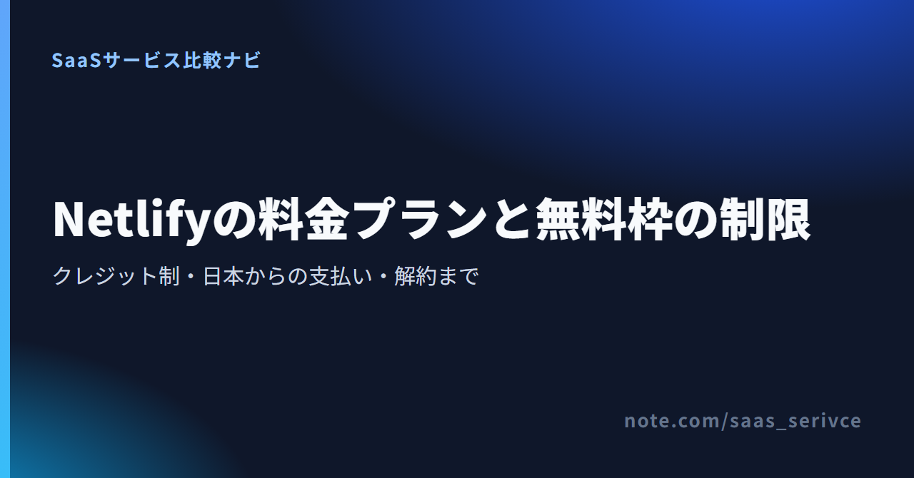
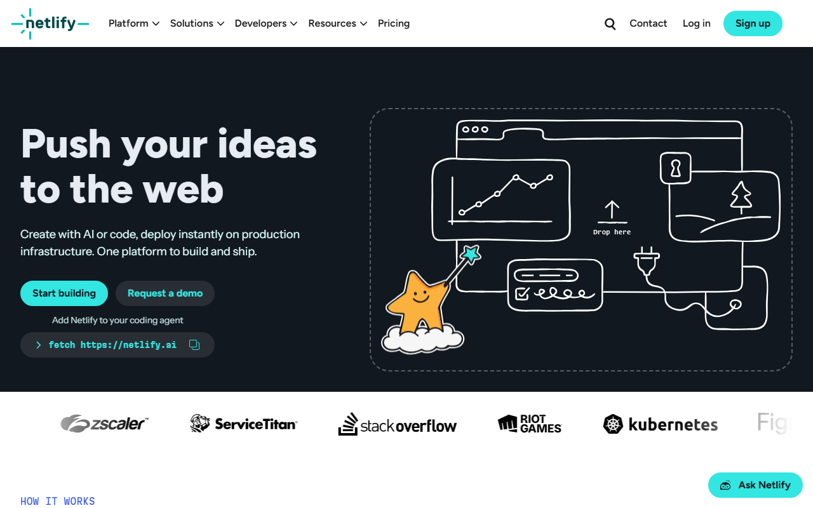
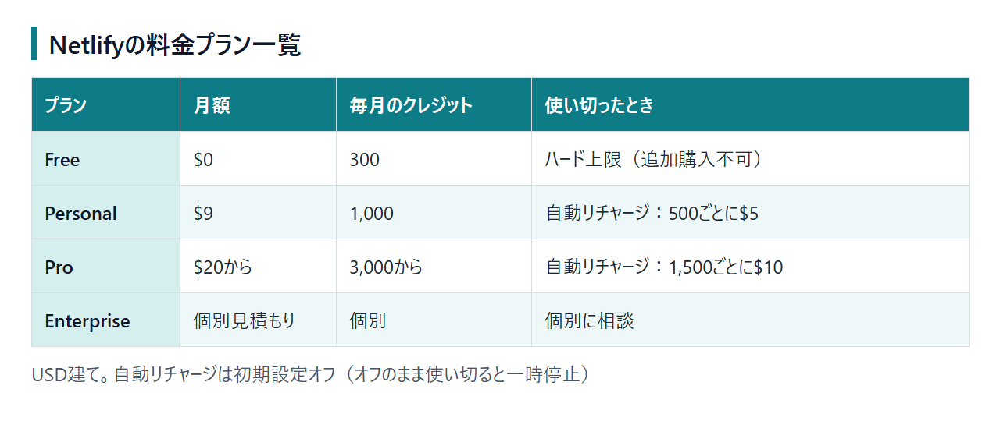

Netlifyは、Webサイトやアプリの開発から公開までを支える配信基盤です。個人サイトにも複数人での開発にも対応し、無料と有料のプランがあります。
新規アカウントにはクレジット制が適用されます。この記事で扱うのは、4プランの料金と無料枠の制限です。独自ドメインなどの機能や、日本からの支払い・解約方法も取り上げます。
上部の「Pricing」を開くと、各プランの月額と付与クレジットが分かります。
新規アカウントには、Free、Personal、Pro、Enterpriseの4プランがあります。比べたいのは、月額と付与されるクレジット量の両方。使い切ったあとの扱いまで見ると、各プランの違いが分かります。

画面は英語表示。上部に「Pricing」があります。中央には「Start building」と「Request a demo」のボタンが並びます。

1ドル=157円換算（執筆時点の目安。為替で変動）では、Personalは約1,413円です。Proは約3,140円から。請求はUSD建てで、Enterprise以外は月払いです。
料金は問い合わせ後に決まります。カードのほか、ACH（米国の口座振替）や銀行送金にも対応。Enterpriseに限り、年払いの前払いも選べます。
2025年9月4日より前に作られたアカウントでは、StarterやProなどがLegacy planとして扱われます。ネット上で見かける「帯域幅」や「ビルド時間」で区切った無料枠は、この旧体系のもの。超過料金の説明も同様です。
2025年9月4日以降に作ったアカウントは、クレジット制です。必要量の見積もりに、旧記事の数値は使えません。Legacy planからクレジット制へ切り替えると元に戻せないため、旧アカウントを使っている人は注意しましょう。
「Start building」から無料登録できます。「Pricing」では、4プランの枠を見比べられます。
必要量は、次の章にある消費単位を使って見積もれます。
Freeは期間限定のトライアルではなく、常設プランです。ただし、月300クレジットを使い切っても課金で延長できず、次の請求サイクルまでサイトは止まります。 無料で続けるには、何にクレジットを使うのかを把握しておきましょう。
無料枠に利用期限はありません。制限されるのは期間ではなく、月ごとのクレジット量です。
Freeには、配信に必要な主な機能がそろっています。カスタムドメイン＋SSLやDeploy Previewが対象。FunctionsとNetlify Databaseも含まれます。パスワード保護や2人目以降のメンバー追加は、有料プランの機能です。クレジットの買い足しもFreeでは使えません。
クレジット制では、サイトの公開や配信に伴う処理ごとに消費量が決まります。次の単位で、月の付与分から差し引かれる仕組みです。
デプロイのうち、クレジットを使うのは本番デプロイです。300クレジットを1項目だけに使う場合、本番デプロイなら月20回にあたります。帯域幅なら15GB。Web Requestsなら150万件です。
実際のクレジットは、各項目の合計で減っていきます。1日に何度も本番へデプロイすると、アクセスが少なくても枠は早く尽きます。
Freeではクレジットを買い足せないため、300クレジットを使い切っても料金は請求されません。ネット上で見かけるのが、「無料枠を超えて高額な請求が来た」という体験談。これは、帯域幅の超過に課金する旧プラン（Legacy plan）での話です。
上限に達すると、チームの全プロジェクトが一時停止します。訪問者には「Site not available」と表示され、Web Requestsもフォーム送信も受け付けません。各デプロイも、本番・Deploy Preview・ブランチを問わず止まります。
再開の時期は、次の請求サイクルが始まったときです。PersonalまたはProへアップグレードした場合も再開します。
使用量が50%、75%、90%、100%に達するたびに、メールとアプリ内で通知が届きます。90%の通知が来たら、月末までデプロイを控えるか、有料プランへ切り替えるかを決めましょう。対応を決めておけば、突然の停止を避けられます。
料金ページでは、Freeを「$0 forever」と案内しています。利用期限はなく、クレジット超過分の請求もありません。
有料プランでは、パスワード保護やメンバー追加が使えます。上限後もサイトを止めずに続けられる点が、Freeとの大きな違い。付与量はFreeが300、Personalが1,000、Proが3,000からです。使い切ったときにクレジットを買い足せないのは、Freeだけです。
Freeにもカスタムドメイン＋SSLとNetlify Databaseが含まれますが、パスワード保護はProからです。 ただし、ドメインの取得費は別にかかり、Edge FunctionsやDatabaseを使うとクレジットも消費します。
Freeでも手持ちのドメインを接続し、SSLで配信可能です。料金がかからないのは、ドメインの接続とSSLだけ。ドメイン自体は登録事業者から取得し、更新費用も支払います。独自ドメインがなければ、Netlifyが割り当てるサブドメインで公開できます。
「アクセス制限」は、何を制限したいかによって使えるプランが異なります。下の3項目を分けて考えてください。
社内向けのプレビューを関係者だけに見せる場合も、外注先に一部の操作だけを任せる場合も、Proが前提です。特定の国からのアクセスを遮るだけなら、Freeでも対応できます。
Edge Functionsは、閲覧者に近い配信拠点で処理を実行する機能です。Functionsの実行（Compute）とは別枠。Web Requestsとして1万件あたり2クレジットを消費します。キャッシュ済みのレスポンスを返す場合は呼び出されず、旧プランの無料枠も現行のクレジット制には当てはまりません。
Netlify DatabaseはFreeにも含まれ、データベースを3つまで作れます。ストレージは最大5GBです。消費量は、Database Computeが1単位10クレジット。Database Bandwidthは1GBで20クレジットです。
Freeのデータベースは、5分間操作がないとスリープ状態になります。常時稼働には向きません。配信とデータベースで同じ300クレジットを分け合うため、本番で使い始めたらFreeのままで足りるか見直しましょう。
上限による停止を許容できる小規模サイトにはFree、止めたくないサイトにはPersonalが合います。メンバー追加やパスワード保護が必要ならProです。 Netlifyが合わなければ、VercelやCloudflare Pagesと比べてみましょう。
VercelとCloudflare Pagesも、静的サイトやフロントエンド向けのホスティングです。比較では、まず上の4点をそろえます。料金がクレジット制か、上限後にサイトが止まるのか、追加請求になるのかも見比べましょう。
学習用サイトや試作段階のアプリなら、停止しても事業への影響は小さいでしょう。期間限定のキャンペーンページも同様。たとえば、本番デプロイが月10回（150クレジット）とします。帯域幅が5GB（100クレジット）なら、合計250クレジットで300に収まります。90%の通知が続けて届くようになったら、有料化を考える時期です。
Personalで上限後もサイトを動かすには、Team Ownerが自動リチャージを有効にしておきます。補充は500クレジットごとに$5。月額$9に補充を2回加えると$19で、合計2,000クレジットになります。$20で3,000クレジットが付くProとほぼ同じ金額です。
上部の「Pricing」から、PersonalとProの月額や追加枠の価格を比べられます。
PersonalとProの分かれ目は、月のクレジット消費が2,000を超えるかどうかです。超えるなら、Proの3,000クレジット枠が割安。下回る場合は、Personalと補充の組み合わせが安く収まります。1人で使っていても、補充が毎月3回以上ならProのほうが費用を抑えられます。
Proは席数に上限がなく、デザイナーやエンジニアに加えて、クライアント側の担当者も同じチームに招待できます。FreeとPersonalではメンバーをオーナー1人しか置けないため、2人目を招く時点でProが必要です。
パスワード保護もProから使えます。公開前のサイトをクライアントにだけ見せる受託案件なら、1人で作業していてもProが候補に入ります。
NetlifyはUSD建てで、クレジットカード、Apple Pay、Google Payで支払えます。支払い済みの請求書は管理画面からダウンロード可能です。 問い合わせ窓口は、全プラン共通のSupport Forumsと非公開のメールサポート。Personal以上は、優先メールサポートの対象です。日本語対応の案内は見当たらないため、やり取りは英語になると考えておきましょう。
支払いには、クレジットカード、Apple Pay、Google Payを使えます。Enterpriseでは、ACHや銀行送金も選択可能です。PayPalや暗号資産は対象外。
対応カードブランドの一覧は公開されておらず、JCBが使えるかも明記されていません。普段JCBを使う人は、VisaやMastercardのカードも用意しておきましょう。別のカードがあれば、登録画面で支払いに進めない場合に備えられます。
Enterprise以外のプランは月額課金で、各請求サイクルの開始時に料金がかかります。PersonalやProは1年分をまとめて前払いできないため、毎月のカード明細を経理へ回します。
支払い済みの請求書は、管理画面の「Usage & billing」から取得します。「Billing details」にあるInvoicesを開くと、一覧と内訳を確認でき、PDFもダウンロード可能です。
請求書に会社名などの宛名を載せられるかは、現行のクレジット制の案内に記載がありません。宛名入りの書類が経費精算に必要なら、最初の請求書で記載内容を確かめ、その内容に合わせて社内での処理方法を決めましょう。
請求はUSDなので、カード会社の換算レートや手数料により、円での支払額は毎月変わります。請求書に、日本の適格請求書発行事業者の登録番号が載るかは、公式の案内が見当たりません。海外サービスの利用料を経費や消費税の計算でどう扱うかは、顧問の税理士に確認してください。
有料プランは、管理画面または書面の通知で解約できます。ダウングレードは次の請求サイクルから反映され、早期に解約しても支払い済みの料金は返金されません。
管理画面から解約するなら、現在の契約期間が終わる1日前までに手続きを済ませます。期限を過ぎると同じ期間で自動更新され、次の期間分の料金が発生します。
サポート（support@netlify.com）宛ての書面通知で解約する場合、期限は契約期間終了の10日前までです。管理画面の「1日前」と混同すると、手続きをしたつもりでも自動更新されるおそれがあります。
ProからPersonal、PersonalからFreeへ変更しても、切り替わるのは次の請求サイクルが始まるときです。変更した当日から料金は下がりません。Freeに戻すとクレジットを追加できなくなり、上限も300クレジットのハード上限に戻ります。
契約期間の途中で解約やダウングレードをしても、支払い済みの料金は日割りでも返金されません。上位プランへアップグレードした場合は、旧プランの料金が日割りで返金されます。
公式サイトの「Pricing」では、Freeへ戻した後の機能と上限を見直せます。
申し込み後は、請求サイクルの開始日を控えておきましょう。解約期限は、管理画面なら終了日の1日前、書面通知なら10日前です。開始日から逆算すると、更新前に手続きを済ませられます。
無料枠で迷いやすいのは、期限、上限時の請求、ドメインの費用、旧料金との違いの4点です。
Freeは「$0 forever」の常設プランで、自動で有料に切り替わる仕組みではありません。有料プランが必要になるのは、パスワード保護やメンバー追加を使う場合です。上限に達してもサイトを止めたくない場合も、有料プランを選びます。
Freeでは請求されず、月300クレジットに達した時点でサイトが止まります。PersonalとProも、自動リチャージを有効にしていなければ追加の請求はなく、同じように止まります。有効にした場合は、Personalで500クレジットごとに$5、Proで1,500クレジットごとに$10が加算されます。
無料なのは、手持ちのドメインを接続してSSLで配信する部分です。ドメインの取得費と更新費は、ドメイン登録事業者へ別に支払います。
2025年9月4日以降に作った新規アカウントでは、旧体系の無料枠は使えず、クレジット制が適用されます。それより前からのアカウントは、Legacy planのままの場合があります。管理画面のプラン名を確かめてください。
月300クレジットに収まるならFreeが候補です。止めずに動かすならPersonal、複数人で使うならProを選びます。 Netlifyが合わなければ、VercelやCloudflare Pagesも比較候補です。
公式サイトでは、Netlifyの主な機能を確認し、そのまま料金ページを開けます。
旧アカウントを使っている場合は、管理画面のプラン名がLegacy planかどうかを見てください。クレジット制に切り替えると、元には戻せません。本番デプロイの回数と帯域幅から必要なクレジットを見積もり、そのうえで切り替えましょう。
関連するnote